| tutoring | performance | |
|---|---|---|
| 0 | 0 | 76.432447 |
| 1 | 1 | 91.550461 |
| 2 | 1 | 85.107378 |
| 3 | 0 | 69.981030 |
| 4 | 1 | 70.111151 |
| ... | ... | ... |
| 195 | 0 | 68.477160 |
| 196 | 0 | 87.783594 |
| 197 | 1 | 88.220111 |
| 198 | 1 | 93.399423 |
| 199 | 1 | 84.082421 |
200 rows × 2 columns
We have seen how to characterize the relationship between two or more variables with correlation and linear regression. We also said that correlation is not causation, meaning that, if we observe a correlation between two variables, that does not necessarily imply a cause-effect relationship between them. However, in many cases, it is still useful (or required!) to establish a cause-effect relationship (or lack thereof) between two variables. Consider the following examples:
Luckily, the field of causal analysis has, over the years, developed a set of tools which allow to answer those questions.
The goal of this lecture is to provide a primer of causal analysis, introducing the main concepts and discussing some techniques which can be applied in some simple cases.
Let us consider an example:
A school wants to see if a new teaching method is effective. To do so, they ask 50 students if they want to voluntarily enroll a tutoring program. After one year, they measure the average performance of students who participated in the programme and compare it to those of students who did not participate in the programme.
We obtain the following data:
| tutoring | performance | |
|---|---|---|
| 0 | 0 | 76.432447 |
| 1 | 1 | 91.550461 |
| 2 | 1 | 85.107378 |
| 3 | 0 | 69.981030 |
| 4 | 1 | 70.111151 |
| ... | ... | ... |
| 195 | 0 | 68.477160 |
| 196 | 0 | 87.783594 |
| 197 | 1 | 88.220111 |
| 198 | 1 | 93.399423 |
| 199 | 1 | 84.082421 |
200 rows × 2 columns
We want to understand if tutoring has an effect on performance. Let us show some boxplots:
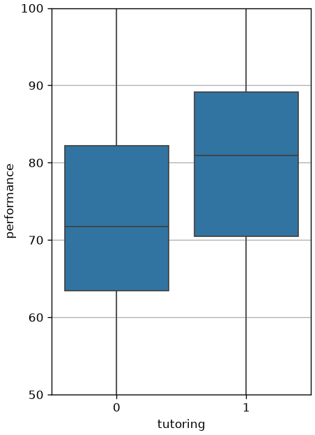
The comparison tell us tutoring seems to significantly improve performance! However, we took a statistics class, so we want to check if everything is statistically significant. We add a notch to each plot. The notch will highlight the confidence intervals for the estimation of the median value:
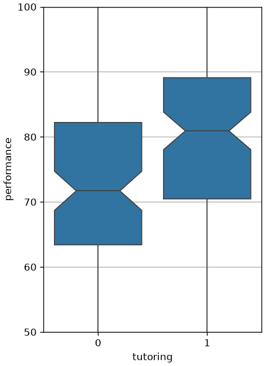
Since the notches do not intersect, there is no overlap between the confidence intervals for a C.L. of 95\%, hence it is very unlikely that the two median values are very close to each other. The difference seem to be statistically relevant. If we want to be very sure, we can compute a two-sample t-Test to ensure that the mean values of the two samples actually are distinct.
The null hypothesis will be that the two samples have the same mean. If we reject this hypothesis, then the two means are distinct. We obtain the following test statistic and p-value:
T-test results - T-statistic: 4.086568160195115, p-value: 6.358186591194334e-05It looks like the tutoring program is a great success!
The comparison above seems to be clear: we should enroll everybody in the tutoring program! But we also know that correlation is not (necessarily) causation!. We are seeing a correlation here - is it also causation? Of course, we want to know whether it is worth to extend the tutoring program or not!
To be able to truly assess a causal relationship between the two variables, ideally, we would like to take the same student and let them attend and not attend the tutoring program at the same time, so that then we can compare, for the same student, the effect of tutoring alone. This is of course impossible to do and even if we could it would be unethical. Can we ask a student not to follow a program which we suspect will harm their performance? Even if we ask the same student to first follow the tutoring, then stop, the student “before” and “after” is not the same student after all, so the two values will never be fully comparable.
We will now enter the realm of potential outcomes. In practice, we ask ourselves questions such as “what if this student did not take the tutoring?”. Let’s see some notation first. We will define two variables:
If for a unit i, the treatment value is T_i=t, we will denote the related observation Y_i as Y_i(t). We note that, for a given unit i, we will either observe Y_i(0) or Y_i(1), but never both!.
Nevertheless, we will introduce the concept of potential outcome as the value we would observe if we were able to intervene on the treatment variable T_i and change it. If for a unit i we have T_i=0, we will directly observe the outcome Y_i(0), but we will also theoretically define the potential outcome Y_i(1). This is not real and cannot be observed but it will serve as a useful theoretical concept.
Potential outcomes are also known as counterfactuals because they answer to the question “what if…”.
If we had potential outcomes, for each unit i we could compute the individual treatment effect (the effect of taking the treatment) as:
Y_i(1) - Y_i(0)
This is the effect of attending the tutoring. If we average this over the distribution of observations, we obtain the average treatment effect:
ATE = E[Y(1) - Y(0)]
This value will tell us how the exam performance varies in average if the same subjects takes the tutoring or not. As such, it would indicate the causal effect of tutoring on examination performance.
Alternatively, we can compute the average treatment effect on the treated:
ATT = E[Y(1) - Y(0)|T=1]
This simply restricts the computation to the treated subjects, and also establishes a causal effect.
Without potential outcomes, we cannot compute the ATE or ATT scores. Indeed, we have two distinct groups, the treated (i.e., those observations i such that T_i=1) and the untreated, also known as control group (i.e., those observations i such that T_i=0).
We could think to replace that calculation with the only data we can observe:
E[Y(1)|T=1] - E[Y(0)|T=0]
This is what a correlation can measure: the change in average value of Y in two distinct groups with different characteristics.
Note that there are no potential outcomes in the expression above as we directly observe Y_i(1) when T_i=1 and we directly observe Y_i(0) when T_i=0. However, the expression above is now comparing different groups. Indeed, the subjects who took the treatment are different from the ones who did not take the treatment, and we do not know if their exam performance scores are really comparable. Imagine that, for some reason, students in group 1 are, by chance, better students, then the difference we measure is going to be biased and will not reveal a cause-effect relationship.
We can show this in formulas. Let’s add and subtract the counterfactual term E[Y(0)|T=1] to the expression above:
E[Y(1)|T=1] - E[Y(0)|T=0] = E[Y(1)|T=1] - E[Y(0)|T=0] - E[Y(0)|T=1] + E[Y(0)|T=1]
We note that:
ATT = E[Y(1) - Y(0)|T=1] = E[Y(1)|T=1] - E[Y(0)|T=1]
Hence, we can see the expression above as follows:
E[Y(1)|T=1] - E[Y(0)|T=0] = E[Y(1)|T=1] - E[Y(0)|T=1] + E[Y(0)|T=1] - E[Y(0)|T=0] = = ATT + E[Y(0)|T=1] - E[Y(0)|T=0]
We will call the last term the bias:
BIAS = E[Y(0)|T=1] - E[Y(0)|T=0]
So the whole expression can be seen as:
E[Y(1)|T=1] - E[Y(0)|T=0] = ATT + BIAS
which shows that the effect given by the correlation (left term) is biased. Note that the bias cannot be computed (it contains a counterfactual term), but we can interpret it as follows:
The bias measures how the treated (T=1) and control (T=0) groups would differ if no one had taken the treatment.
In practice:
Note that, given the observations above, we now know when association allows to establish a cause-effect mechanism. This happens when the bias is zero:
BIAS = E[Y(0)|T=1] - E[Y(0)|T=0] = 0
That is to say, when the difference between treated and untreated is zero (or at least very small).
Given this intuition, we now try to estimate the students’ abilities by asking how many hours they study per day. We get the following data:
| tutoring | performance | average_study_hours | |
|---|---|---|---|
| 0 | 0 | 76.432447 | 3.316778 |
| 1 | 1 | 91.550461 | 8.025442 |
| 2 | 1 | 85.107378 | 6.433760 |
| 3 | 0 | 69.981030 | 4.758812 |
| 4 | 1 | 70.111151 | 3.151239 |
| ... | ... | ... | ... |
| 195 | 0 | 68.477160 | 3.124462 |
| 196 | 0 | 87.783594 | 6.338848 |
| 197 | 1 | 88.220111 | 7.859334 |
| 198 | 1 | 93.399423 | 7.907677 |
| 199 | 1 | 84.082421 | 6.264832 |
200 rows × 3 columns
We cannot measure bias from this data because we do not have access to counterfactual observations, but, now that we have access to a proxy for students’ abilities, we can try to see if, in the two groups, abilities are equally distributed. Let’s see this with a boxplot:
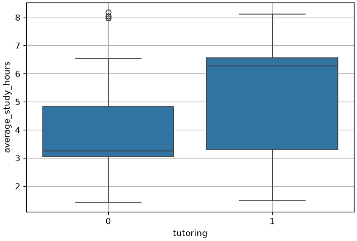
From the picture above, we see that students’ skills are not equally distributed in the two groups. This is not enough to say that the bias is different from zero, as we are not observing counterfactuals, but we now see that the difference in outcomes could be due to two different causes:
We can check the hypothesis that average study hours affects performance with a scatterplot:
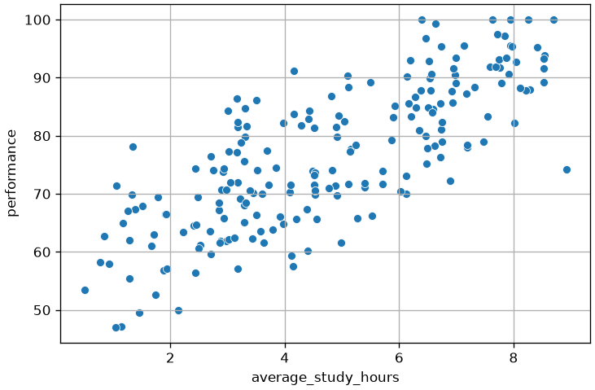
From the picture above there seem to be a correlation between the two!
Now that we have an intuition into what may make correlation be not indicative of causation, let’s see how to reduce bias to establish cause-effect relationships.
We have seen that correlation is causation when the treated and control groups are comparable for everything except the treatment. The most robust method to remove this bias is via randomized experiments, or Randomized Controlled Trials (RCT).
A randomized experiment randomly assigns individuals in a population to a treatment or a control group. By performing a random assignment, we wish to make the two groups indistinguishable. Of course one of the two groups will take the treatment and this will likely make the two groups distinguishable, but we wish to make sure that, apart from the treatment, the two groups are indeed indistinguishable.
It can be shown that random assignment makes sure that the potential outcomes are conditionally independent given the treatment:
Y(0) \perp Y(1) | T
So, if the treatment T is fixed, the potential outcomes are independent. For instance, if we fix T=1 (so we are taking subjects who attended the tutoring), then knowing the observed value Y_i(1) (i.e., the observed exam performance of student i), does not tell me anything about the potential outcome Y_i(0) (the exam performance that the same student would obtain if they did not attend the tutoring).
Recall our example on conditional independence: if height and vocabulary are conditionally independent given age, this means that height and vocabulary are independent in the same age groups, while they are not across age groups, so age is the only thing that make height and vocabulary dependent. Similarly, if Y(0) \perp Y(1) | T, then the treatment is the only thing generating a difference between the outcome in the treated and in the control group.
If this conditional independence is valid, then:
E[Y(0)|T=0] = E[Y(0)|T=1] = E[Y(0)]
and:
E[Y(1)|T=0] = E[Y(1)|T=1] = E[Y(1)]
Which leads to:
E[Y(1)|T=1] - E[Y(0)|T=0] = E[Y(1)] - E[Y(0)] = E[Y(1)-Y(0)] = ATE
Hence, in this case, correlation would be causation.
We now have a tool to remove the bias probably arising from our prior experiment. Let’s say we could repeat the experiment, now with random assignment.
Word of caution: this is not always possible. For instance, in this case, it would not be very polite to “force” students to enroll programs, so we may not be able to carry out this experiment, but let us assume for a moment that we can.
We repeat the experiment and obtain these results:
| tutoring | performance | |
|---|---|---|
| 0 | 0 | 76.432447 |
| 1 | 1 | 91.550461 |
| 2 | 1 | 85.107378 |
| 3 | 0 | 69.981030 |
| 4 | 1 | 70.111151 |
| ... | ... | ... |
| 195 | 0 | 68.477160 |
| 196 | 0 | 87.783594 |
| 197 | 0 | 87.970111 |
| 198 | 1 | 93.399423 |
| 199 | 1 | 84.082421 |
200 rows × 2 columns
Let’s visualize the boxplots:
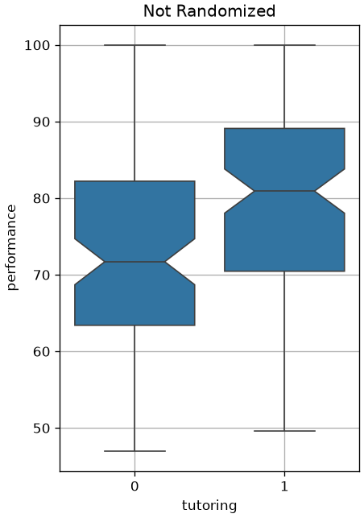
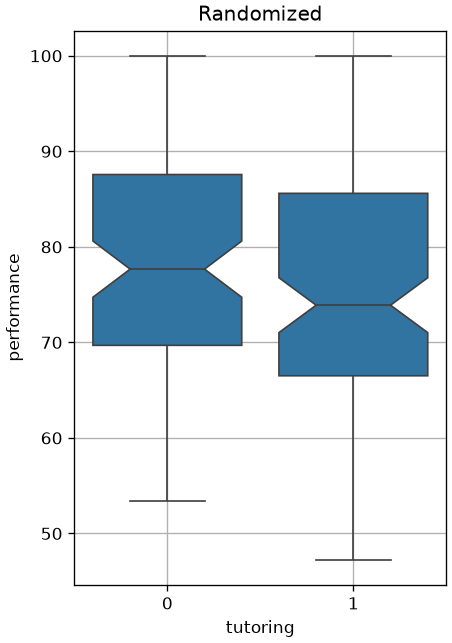
We now see a less dramatic (and actually negative!) improvement. What happened?
By performing a random assignment, we got rid of selection bias. Students voluntarily choosing to enroll in the programme were probably more motivated and keen to study. We now see that the impact of tutoring is very small. We can perform a t-test to assess if this is statistically significant:
T-test results - T-statistic: -1.1327518742165315, p-value: 0.2586882978200425We got a large p-value, the difference is not statistically significant.
We have seen how to interpret an observed association as a cause-effect relationship we need to reduce bias. The gold standard is to use randomized controlled trials, however this is not always feasible or ethical. Consider for instance the problem of estimating the effect of smoking on the development of a given disease. To perform a randomized experiment, we should select subjects randomly in two groups and ask people in one of the two groups to smoke. This is of course unethical, considering that we suspect that smoking has a bad effect on health.
In these cases, we can only resort to observational data: we collect data of smokers and non-smokers and observe association in the data. However, we know that this process is subject to bias. How do we deal with it? In this part of the lecture, we will see that graphical causal models give us a framework to set our believes on where bias come from. If we can accurately model the source of bias, we can remove it by controlling on the variable “causing” the bias.
Let us consider our past example: students and tutoring. Let us assume that we cannot perform the random assignment (again, it’s unethical!). Since we imagine that the interest of students towards study can be a source of bias, we now ask students to also tell us how interested they are in studying in general in a scale from 1 to 5. We obtain the following observations:
| tutoring | performance | interest | |
|---|---|---|---|
| 0 | 0 | 76.432447 | 2.0 |
| 1 | 1 | 91.550461 | 5.0 |
| 2 | 1 | 85.107378 | 4.0 |
| 3 | 0 | 69.981030 | 3.0 |
| 4 | 1 | 70.111151 | 2.0 |
| ... | ... | ... | ... |
| 195 | 0 | 68.477160 | 2.0 |
| 196 | 0 | 87.783594 | 4.0 |
| 197 | 1 | 88.220111 | 5.0 |
| 198 | 1 | 93.399423 | 5.0 |
| 199 | 1 | 84.082421 | 4.0 |
200 rows × 3 columns
These are the same observations as the first case (before random assignment), but with an additional variable. We suspected that interested students have an average higher performance and that interested students are more likely to enroll in the tutoring program. Let us see graphically if this is true. If we split the data by interest and compute the boxplots of performance, we get the following graph:
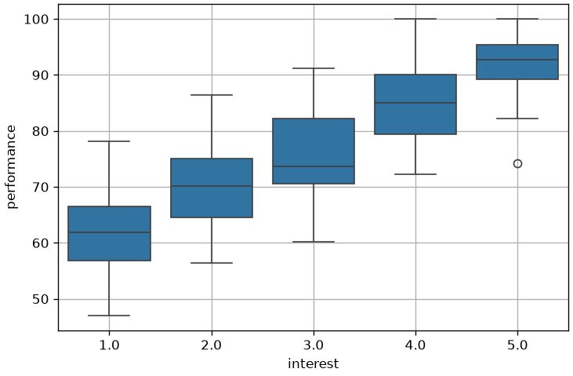
We were right! (ok, this is an exaggerated picture, but this example is made up…)
Let us check how correlated are interest and tutoring with a barplot:
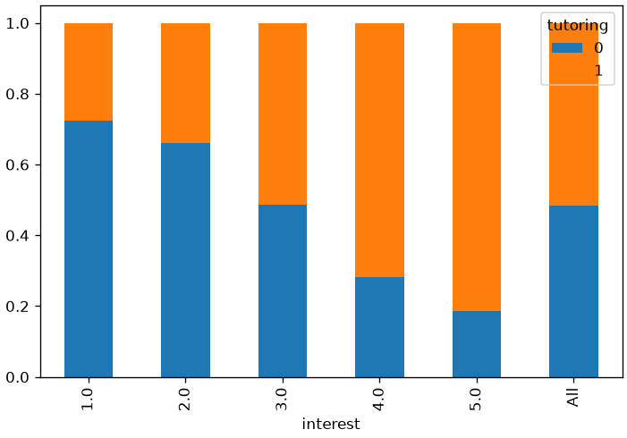
We can also check the distribution of interest in the two groups:
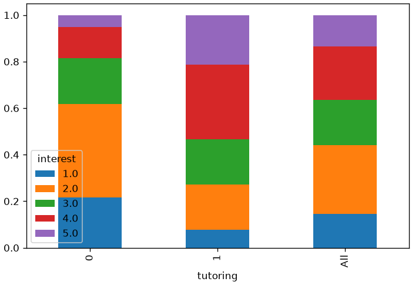
We can go ahead and compute a \chi^2 test of independence to check if the association between the two variables is statistically significant:
Chi-square statistic: 31.22
Cramer V statistic: 0.40
Chi-square p-value: 2.761663e-06We were right also in this case! Interest affects tutoring, hence interest is our source of bias!
The correlation between the interest variable and tutoring is making the “treated” (tutoring=1) and the “control” (tutoring=0) groups not comparable. Indeed, if people in the treated group have more chances of getting a higher response value (performance), then no wonder that we observe such dramatic differences among the two groups! In other words, the effect we observe may be due to the bias introduced by interest, the effect of tutoring, or a combination of both.
interestHow do we make the groups more comparable? Recall that we want:
Y(0) \perp Y(1) | T
We have seen that this is not true because of interest. Indeed, if we pick a person in the group T=0 with a high Y(0), we can imagine this is due to a large value of interest, so we can easily predict that Y(1) will also be large. If we can predict Y(1) from Y(0), then they are not independent (conditioned on T=1 in this case).
To obtain the statement above, we should perform a random assignment, which we cannot do. However, we know that interest is the source of bias. Let us assume that it is the only source of bias. Then, if X represents interest, we can say that:
Y(0) \perp Y(1) | T, X
Indeed, if we pick a person from a group T=0 and with a given interest value X=4, then, given a large Y(0) we cannot really say anything about Y(1). Indeed, if X=4 and Y(0)=80, we have a student with great interest and high performance. What can we say about Y(1)? We could say that it will be high (the student has high interest), but any other student in this group will probably have a high score, so we cannot predict anything which will be significantly different from random (i.e., from the score of another random student within this group).
But, how do we condition on X? Well, the easiest way to do it, is to divide the data into different groups based on the values of X and assess any association within the groups. Let us do it:
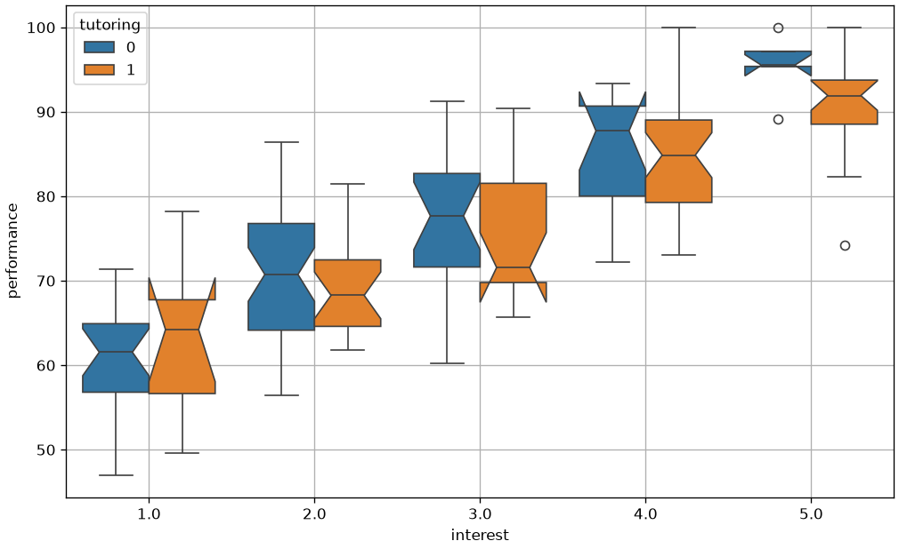
In the plot above, we compare the effect of tutoring in the different interest groups. As we can see, the association between tutoring and performance tends to vanish within the groups. This is shown by the fact that the notches (confidence intervals) tend to intersect. We can get a clearer picture by performing 5 different two-sample statistical tests assessing whether the means of performance in the two groups differ in a statistically significant way:
| t_statistic | p_value | |
|---|---|---|
| interest | ||
| 1.0 | 0.934780 | 0.358187 |
| 2.0 | -0.781177 | 0.437931 |
| 3.0 | -0.867406 | 0.391310 |
| 4.0 | 0.164684 | 0.869947 |
| 5.0 | -1.383074 | 0.178871 |
As we can see, there is no significant association between performance and tutoring, which suggests the lack of a causal effect.
The act of conditioning on X (e.g., by dividing into groups) is called “controlling for X”.
We have seen a simple case in which we could identify the main source of bias which was leading to an observed association not implying a cause-effect mechanism. However, not all cases are so simple and more than one variable may be responsible for bias. The question now is
How do we identify the variables we should control for?
To help us in this quest, we can use graphical causal models. A graphical causal model is a directed acyclic graph formalizing cause-effect relationships between variables. Each node is a random variable, while a directed edge A \to B indicates that A causes B.
The causal graph describing the hypotheses we made in this example will look like this:
Indeed, we expect interest (X) to influence both performance (Y) and whether a subject belong to the treated or control group, i.e., the tutoring variable (T). From the model above, we can identify interest as a source of bias, but as we will see shortly, we can use a set of rules to identify which variables we should control for or not control for from a graphical model.
Before proceeding, a short note on how graphical models are created: these are generally designed by the data analyst who encodes their own beliefs on how the world works. These come from a “Bayesian” view of the world in which we first establish our beliefs and then use a theoretical framework to draw conclusions from them.
Once we form a graphical model, we can identify a set of standard structures which will allow us to choose which variables to control for. We will see the main structures, but others beside the ones discussed here may exist.
The most straightforward structure is a chain of this kind:
The example above, interest in studying causes the number of study hours, which in turn causes performance. Let us imagine no other variable is involved (i.e., interest is the only variable causing study hours and performance is only caused by study hours). Then we will easily find that:
interest and study hours will be associated;study hours and performance will be associated.interest and performance will be associated.Indeed, for instance:
Let say we control for B, study hours. We will denote the graph as follows (variable we are controlling for is in gray):
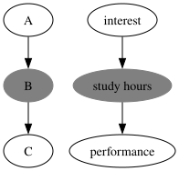
If we control for B, study hours, we will find that interest and performance are not associated anymore. Indeed:
If we consider a group of people who study the same amount of hours and I take a person with good performance, then I don’t know if they have great interest or not. Or better, I cannot distinguish a person with great interest from a person with little interest as they all study the same amount of hours.
In mathematical terms, we know that in general:
A \not\perp C
but, by controlling for B, we obtain:
A \perp C | B
Hence, in groups with the same value of B, we will see an independence between A and C.
In general, we say that conditioning on B blocks the dependency between A and C, hence while there is a causal effect between A and C, we cannot see it anymore when we condition on B.
The graph below shows two identical graphs, except that we are conditioning on B in the version on the right. Besides solid black arrows denoting cause-effect relationships, we also show in red how dependency flows.
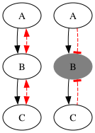
As a result, if we want to study the relation between A and C, we should not condition on B, as this conditioning will make the association between A and C vanish, even if there is a causal effect between these variables.
We are encountering an important concept:
Conditioning on any variable is not a good way to remove bias. If we condition on the “wrong” variable, we may introduce some bias which was not there in the first place and estimate the lack of a causal effect even in cases in which the causal effect is there.
We have a fork structure when a variable causes two other variables. Let us see an example:
In this case B (interest) is causing both A (performance) and C (tutoring). This is the example we have seen before. In this case, as we have seen, we may see a correlation between tutoring and performance. Indeed, a large value of performance will probably mean that interest is high, hence tutoring will probably be equal to 1.
We will call B (or
interest) the common cause.
Although we will likely observe correlations between any pair of the A, B, and C variables, we know from the graph that there is no cause-effect relationship between A and C.
We say that the fork structure creates a backdoor path such that dependence (or association) flows through B (the backdoor) to go from A to C.
As we noted in the previous example, conditioning on B (interest) makes the association between A and C vanish:
A \perp C | B
Hence in the following graph, we will observe no association between performance and tutoring, hence confirming the lack of a causal effect:
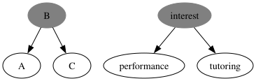
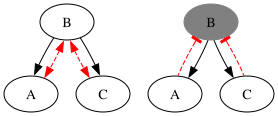
When we do not condition on B, dependency (hence association) flows from A to C through B. Hence, we observe an association which is not due to a causal effect.
When we condition on B, dependency (hence association) does not flow through B, so A and C will be independent and we will measure no association, as it should be.
The last, important structure, is a collider. This is in some sense the opposite of a fork: a variable is caused by two different variables. Let us see this with an example:
The graph above tells us that performance is caused by study hours and intuitive intelligence. We are making the assumption here that intuitive intelligence does not affect study hours in any way. This might be inaccurate, but we will anyway assume so for the sake of a simple example.
This structure is called a collider, because two arrows (from A and C) collide on a single node (B).
A collider blocks dependency. This means that by default, if we do not condition on performance, we will observe no association between study hours and intuitive intelligence. Indeed:
So, in the graph above:
A \perp C
Let us not consider a case in which we condition on B (performance), as shown in the following graph:
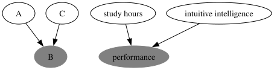
Conditioning on performance changes things. Indeed:
In practice, conditioning on performance makes study hours and intuitive intelligence dependent:
A \not\perp C | B
This phenomenon is called explaining away, because, one we fix B (performance), knowing A (study hours) already explains B, hence making C less likely.
In general, a collider blocks dependency, while conditioning on it unblocks a dependency path. We can use the same conventions as before to illustrate this effect:
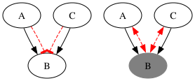
Using these structures, we can determine if two nodes A and B are dependent by checking if an unblocked path exists between A and B. This can be done by combining the rules we have seen above, which are also summarized in the following figure:
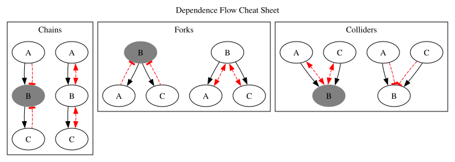
The cheat sheet above is replicated from here and here. You can find more information at those URLs.
We will say that a path between A and B is blocked if:
- It contains a non-collider that has been conditioned on;
- It contains a collider that has not been conditioned on and has no descendants that have been conditioned on.
Let us see an example from here and let us try to answer some questions:
Deciding whether two nodes are independent given a set of others is a mechanical procedure — trace every path, block it or not according to the three rules above — and it is worth doing on paper a few times. The exercises at the end of the chapter ask you to. In practice you will rarely do it by hand: what matters for an analysis is recognising confounding and selection bias, which is what the next section is about.
We will now see how using graphical causal models allows to diagnose bias and understand which variables we should condition on and which we should not when trying to measure a causal effect through correlation. We will see that we have two main sources of bias: confounding bias and selection bias.
Confounding bias happens when the treatment and the effect have a common cause. Let us consider the following example, which we already saw previously:

Here, the outcome Y is performance, which is caused by both the treatment T (tutoring) and another common cause X (interest). The common cause X is called a confounder because it mixes ups the effects of tutoring on performance and interest on performance. Indeed, if we measure the correlation between tutoring and performance, we obtain a large number, but we do not know if this is due to the common cause interest. Maybe, people choose tutoring because they are interested and obtain good performance because they are interested as well.
If we want to be able to measure the direct effect between the treatment and the outcome, we need to close the backdoor path between Y and T. This is done by conditioning on the common cause:
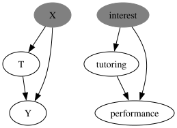
Note that this corresponds to comparing subjects with the same level of interest. In this case, we will observe the direct effect of tutoring on performance, since all students in the considered group have the same level of interest (so any association between tutoring and performance is given by the causal effect). By conditioning on X, we obtain:
Y(0) \perp Y(1) | T, X
While confounding bias happens when we do not condition on a common cause, selection bias happens when we control for too many variables. While one may think that it is a good idea to control on any variable “just in case”, this is not true in general and can lead to selection bias.
Let us consider the following example in which we want to measure the causal effect of intuitive intelligence on performance:
In our data, we also have a score of a test on problem solving. “Just to be sure”, we condition on problem solving:
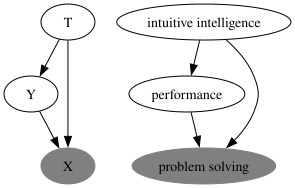
The problem is that problem solving is a common effect of performance and intuitive intelligence. By conditioning on the common effect, we are introducing a form of bias. Indeed, if we look at people with good problem solving abilities, we are probably looking at people with either good performance or good intuitive intelligence. Indeed, knowing that the person has good performance explains away whether they have intuitive intelligence, hence showing a correlation which does not represent a causal effect. By conditioning on the common cause, we opened a backdoor path between Y and T which affects the perceived association between treatment and outcome.
Note that the same is true if we condition on a descendant of the common cause. For instance:
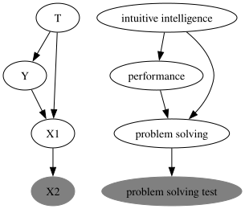
Another case of selection bias, arising from cases in which we control for variables we should not control on, is given by the case in which we control on a mediator of the treatment and the outcome. Let us consider this example:
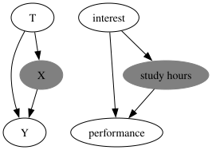
We want to assess the effect of interest on performance. Let’s say we could randomize interest (for instance, we selected students with different levels of interest randomly across different schools). “Just to be sure”, we condition on study hours. Conditioning on the mediator closes a path between interest and performance, hence reducing the measured effect between interest and performance.
Indeed, while we expect that interested students will study more and obtain better performance, by observing only people who study a lot, interest and performance may seem to be little correlated. Indeed, even people with little interest will obtain good performance if they study for long hours.
To summarize, the main sources of bias are three:
These are shown in the graph below:
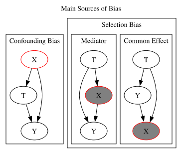
In the figure above, we mark in red the nodes that are not conditioned on, but should be conditioned on, and the nodes that are conditioned on, but should not be conditioned on.
We have seen how to choose a suitable set of variables to control for when we aim to establish a cause-effect relationship. When we said “we control for X”, we implied that we can divide the data in groups and measure association within each group, to then aggregate results and obtain an average effect.
In this section, we will see how we can automate this process with linear regression. Let us consider our previous example in which we wanted to measure the causal effect of tutoring on performance, when we know that interest can be a confounder:
This is the data:
| tutoring | performance | interest | |
|---|---|---|---|
| 0 | 0 | 76.432447 | 2.0 |
| 1 | 1 | 91.550461 | 5.0 |
| 2 | 1 | 85.107378 | 4.0 |
| 3 | 0 | 69.981030 | 3.0 |
| 4 | 1 | 70.111151 | 2.0 |
| ... | ... | ... | ... |
| 195 | 0 | 68.477160 | 2.0 |
| 196 | 0 | 87.783594 | 4.0 |
| 197 | 1 | 88.220111 | 5.0 |
| 198 | 1 | 93.399423 | 5.0 |
| 199 | 1 | 84.082421 | 4.0 |
200 rows × 3 columns
Recall that in this case the assignment is not random, so we expect interest to influence both tutoring and performance. If we ignore this bias, we can compute the average difference in the effect of the treated and untreated:
E[performance|tutoring=1] - E[performance|tutoring=0]
We can do this in computational terms as follows:
students[tutoring==1]['performance'].mean()-students[tutoring==0]['performance'].mean()np.float64(-2.043673682064565)Another relevant value to compute is the average performance of the untreated:
students[students['tutoring']==0]['performance'].mean()np.float64(72.92912990981884)We can see how these values are automatically computed within a linear regressor of the kind:
performance = \beta_0 + \beta_1 tutoring
These are the coefficients after fitting:
| coef | std err | t | P>|t| | [0.025 | 0.975] | |
| Intercept | 72.9291 | 1.199 | 60.832 | 0.000 | 70.565 | 75.293 |
| tutoring | 6.8269 | 1.671 | 4.087 | 0.000 | 3.533 | 10.121 |
Coherently with the interpretation we previously gave of linear regression, we obtain estimates for those two values:
intercept: is the average performance of the untreated, i.e., the value of performance we expect to see in average when tutoring=0;tutoring: is the increment of performance we expect to see in average when we observe an increment of one unit in tutoring (i.e., when passing from tutoring=0 to tutoring=1). This is the average difference of performance when comparing the treated tutoring=1 and the untreated tutoring=0.Also, when we use a linear regressor, we get confidence intervals and the results of statistical tests “for free”.
If we look at the result above, there is non-zero correlation between performance and tutoring. Indeed, the coefficient of tutoring allows us to observe that students who enroll in the tutoring programme, increase their average performance by 6.8269 points (remember that performance lies in the [0,100] range). However, we also know that this result is biased due to the confounder interest. To remove this bias, we should condition on interest:
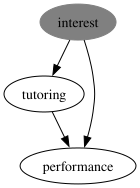
We note that one way to control for a variable is to include it among the independent variables in the linear regressor, i.e., fitting a model like this:
performance = \beta_0 + \beta_1 tutoring + \beta_2 interest
The result is as follows:
| coef | std err | t | P>|t| | [0.025 | 0.975] | |
| Intercept | 54.1697 | 1.296 | 41.804 | 0.000 | 51.614 | 56.725 |
| tutoring | -0.9516 | 1.129 | -0.843 | 0.400 | -3.178 | 1.275 |
| interest | 7.8097 | 0.441 | 17.711 | 0.000 | 6.940 | 8.679 |
We note that, after adding this variable, the values of the coefficients changed substantially. We are in particular interested in the coefficient of tutoring, which is measuring the correlation between tutoring and performance. We note that we can now interpret this value as follows:
\beta_1 (coefficient of
tutoring) is the increment we expect to observe inperformancewhentutoringpasses from 0 to 1 andinterestis held constant.
This last bit is the fundamental one: by including the interest variable, we are effectively controlling for interest. Indeed, the coefficient of tutoring now virtually looks at a subset of the data in which interest is constant. This is in practice the average effect of tutoring when comparing groups of data with constant interest.
Hence, even if we cannot physically perform a random assignment, linear regression allows us to control for variables, hence enabling the analysis of observational data. This is fundamental, as it is not in always feasible to perform random tests.
Getting back to our result above, we note that the coefficient of tutoring has a p-value of 0.4. This means that, while a value different from zero has been computed for it, the hypothesis test is telling us that we do not have enough elements to say that this value actually is different from zero. Hence, we can conclude that tutoring does not have a statistically significant impact on performance.
Note that, if we compute a linear regressor on the randomized set (i.e., the one in which we pretended we could perform random assignment)
performance = \beta_0 + \beta_1 tutoring
we obtain these results:
| coef | std err | t | P>|t| | [0.025 | 0.975] | |
| Intercept | 72.9291 | 1.199 | 60.832 | 0.000 | 70.565 | 75.293 |
| tutoring | 6.8269 | 1.671 | 4.087 | 0.000 | 3.533 | 10.121 |
Coherently with the conclusions made with observational data, there is not a significant relationship between tutoring and performance.
We will see some examples on the LUCAS dataset, which can be found here:
https://www.causality.inf.ethz.ch/data/LUCAS.html
LUCAS is an artificial dataset in which data has been generated drawing values from known distribution to emulate a causal phenomenon. Besides the data, the authors propose the following true causal graph (which reflects the way data has been generated):
Let us have a look at the data:
| Smoking | Yellow_Fingers | Anxiety | Peer_Pressure | Genetics | Attention_Disorder | Born_an_Even_Day | Car_Accident | Fatigue | Allergy | Coughing | Lung_cancer | |
|---|---|---|---|---|---|---|---|---|---|---|---|---|
| 0 | 0 | 0 | 1 | 0 | 0 | 1 | 0 | 1 | 0 | 1 | 0 | 0 |
| 1 | 0 | 1 | 0 | 0 | 0 | 0 | 1 | 0 | 1 | 0 | 1 | 1 |
| 2 | 1 | 1 | 1 | 0 | 1 | 1 | 1 | 1 | 1 | 1 | 1 | 1 |
| 3 | 0 | 0 | 0 | 1 | 0 | 0 | 1 | 0 | 0 | 0 | 0 | 0 |
| 4 | 1 | 1 | 1 | 0 | 0 | 1 | 1 | 1 | 1 | 0 | 0 | 1 |
| ... | ... | ... | ... | ... | ... | ... | ... | ... | ... | ... | ... | ... |
| 1995 | 0 | 0 | 1 | 0 | 0 | 0 | 0 | 1 | 1 | 0 | 1 | 1 |
| 1996 | 1 | 1 | 1 | 0 | 0 | 0 | 0 | 0 | 1 | 0 | 1 | 1 |
| 1997 | 1 | 1 | 0 | 1 | 0 | 0 | 1 | 0 | 1 | 0 | 0 | 1 |
| 1998 | 1 | 1 | 1 | 0 | 1 | 1 | 0 | 1 | 1 | 0 | 1 | 1 |
| 1999 | 1 | 1 | 0 | 1 | 0 | 0 | 0 | 0 | 1 | 1 | 1 | 1 |
2000 rows × 12 columns
Smoking causes Car Accident?We will try to answer the question as to whether there is a causal effect between Smoking and Car Accident. We can start by fitting a logistic regressor:
\log \frac{P(Car Accident|Smoking)}{P(\neg Car Accident|Smoking)} = \sigma(\beta_0 + \beta_1 Smoking)
We need to fit a logistic regressor because the dependent variable is binary (all variables are binary). This is the result:
Optimization terminated successfully.
Current function value: 0.588796
Iterations 5| coef | std err | z | P>|z| | [0.025 | 0.975] | |
| Intercept | 0.7668 | 0.097 | 7.939 | 0.000 | 0.578 | 0.956 |
| Smoking | 0.2596 | 0.113 | 2.299 | 0.022 | 0.038 | 0.481 |
From the observation above, it seems that Smoking is positively associated with Car Accident. Since e^{0.2596} \approx 1.3, we can say that smoking is associated by an increase of +30% in the odds of having a car accident. But, can we say that this is a causal effect? I.e., can we say that smoking causes an increment in the odd of car accident?
We know that there might be some bias. To check for that, let us consider the causal graph again, and let us highlight all dependence paths from the Smoking node to the Car Accident node. These represent all the different ways in which the two variables can be correlated.
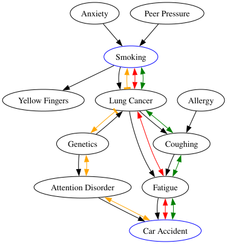
We have three possible paths, highlighted in yellow, red, and green. Arrows indicate whether dependency flows or not. We can see that:
Lung Cancer) that has not been conditioned on. The collider prevents Smoking and Genetics from being associated. This blocked path is ok for us. We are trying to see if smoking causes car accident, and, since, Lung Cancer does not cause Genetics, that path would not be a viable one to check for a causal effect;Smoking could influence Car Accident, i.e., directly through Fatigue or via Coughing. This may lead to a combined effect which is stronger than it is supposed to be.If we want to estimate a causal effect, we need to block one of the two paths. The most sensible thing to do is to condition on Coughing, so that now smoking can affect Car Accident only through Lung Cancer and then Fatigue. This is illustrated as follows:
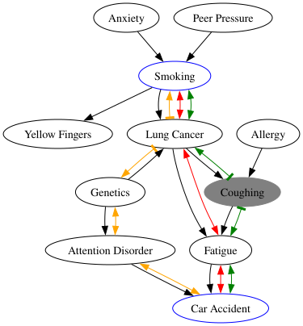
To condition on Coughing, we can fit the following logistic regressor:
\log \frac{P(Car Accident|Smoking, Coughing)}{P(\neg Car Accident|Smoking, Coughing)} = \sigma(\beta_0 + \beta_1 Smoking + \beta_2 Coughing)
We obtain the following coefficients:
Optimization terminated successfully.
Current function value: 0.569895
Iterations 5| coef | std err | z | P>|z| | [0.025 | 0.975] | |
| Intercept | 0.3411 | 0.108 | 3.153 | 0.002 | 0.129 | 0.553 |
| Smoking | -0.0130 | 0.120 | -0.108 | 0.914 | -0.248 | 0.222 |
| Coughing | 0.9529 | 0.109 | 8.717 | 0.000 | 0.739 | 1.167 |
We now get a different picture: the p-value of Smoking is very large. This means that, once we removed the influence of Coughing, the effect of Smoking on Car Accident is negligible (its coefficient is not significantly different from zero). This suggests that there is no significant causal effect between the two variables.
[1] Most of the content of this lecture is based on part of the awesome lecture series “Causal Inference for The Brave and True” by Matheus Facure Alves.
[2] Judea Pearl and Dana Mackenzie. “The Book of Why: The New Science of Cause and Effect”. Penguin.